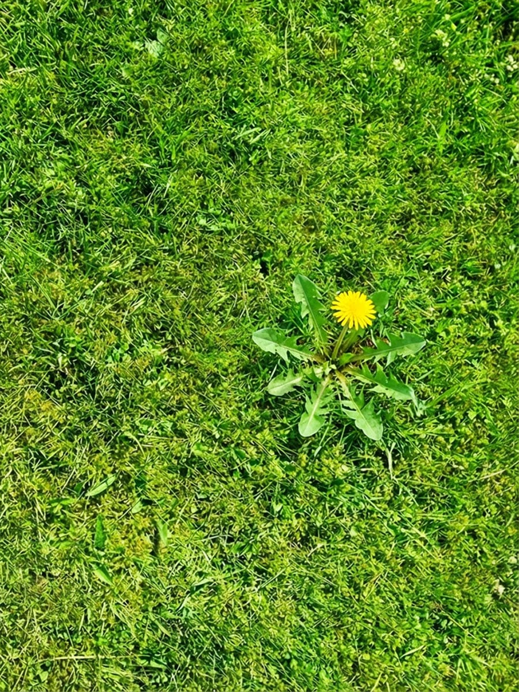
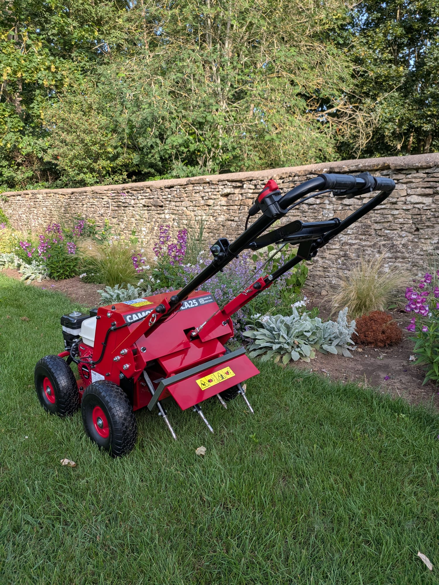
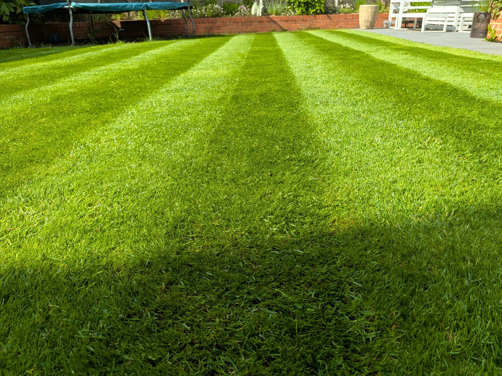
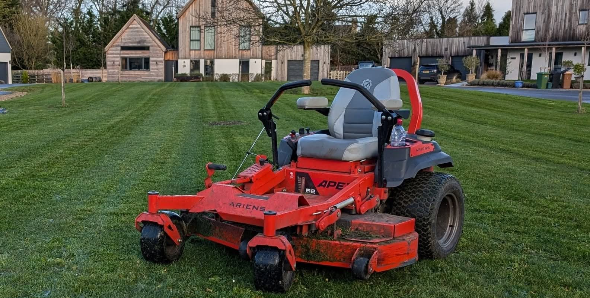
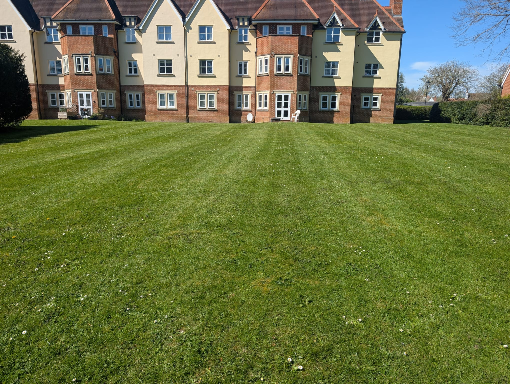
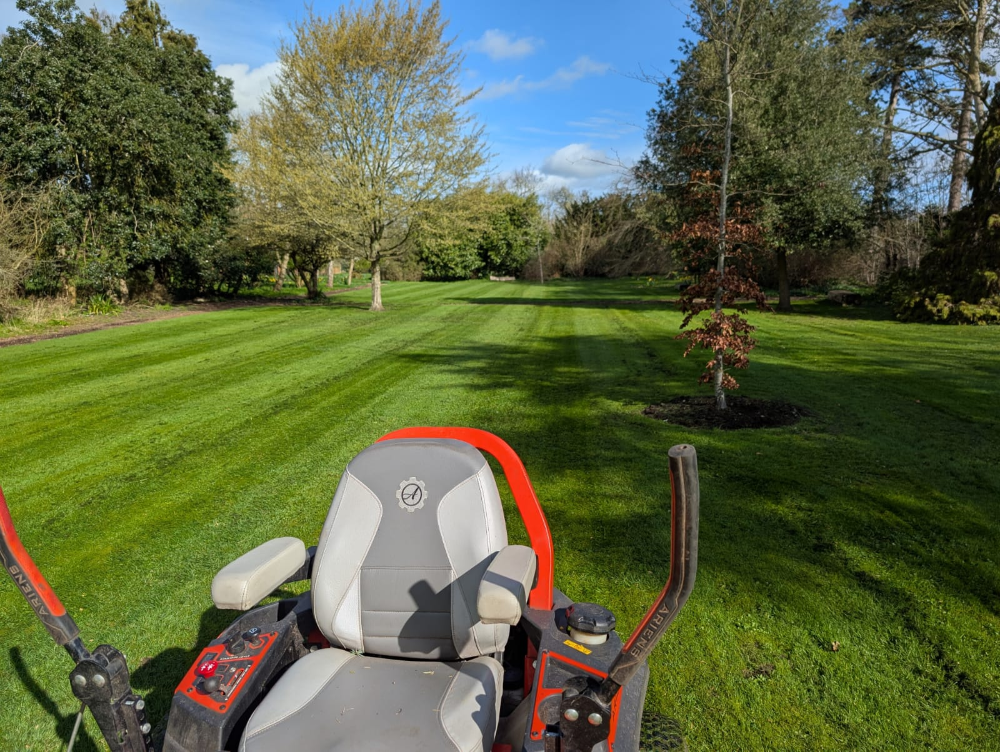

Professional Lawn Care Services
in Oxfordshire
Healthy, greener lawns through expert treatments, renovation, aeration and seasonal maintenance.
Why Choose Green Seasons?
A healthy lawn doesn't happen by accident. Whether your lawn is struggling with weeds, moss, compaction, drought stress or thinning grass, Green Seasons provides professional lawn care services across Oxfordshire to help keep your lawn looking its best throughout the year.
Every treatment is carried out by the business owner, ensuring consistent standards, expert advice and a personalised approach to every lawn.
Owner Operated
Tim on site, every visit
Fully Insured
Public & employer liability
PA1 & PA6 Qualified
Certified herbicide application
Honest Advice
No upselling, just guidance
Bespoke Programmes
Tailored to your lawn's needs
Commercial-Grade Products
Professional amenity treatments
 Before
Before
 During
During
 After
After
Healthy grass starts with healthy soil. Through aeration, seasonal fertilisation, wetting agent applications and professional lawn renovations, we improve the condition beneath the surface where the real work happens. Stronger roots, better moisture retention and improved soil structure lead to a greener, thicker lawn that performs better throughout the year.
— Tim Harris, Green Seasons
Our Lawn Care Services
From routine treatments to complete renovations, everything your lawn needs, carried out to a professional standard by the owner.

Lawn Fertiliser Treatments
Seasonal fertiliser applications to promote healthy growth, colour and root development.

Selective Weed Control
Control dandelions, clover, plantain and other broadleaf weeds without damaging the lawn.


Lawn Aeration
Relieve compaction and improve water, nutrient and oxygen movement through the soil.
- Solid tine aeration
- Hollow tine aeration

Wetting Agent Applications
Help lawns retain moisture and reduce drought stress during hot weather.

Seasonal Lawn Care Calendar
A well-maintained lawn needs the right treatment at the right time of year. Here's how we approach lawn care across the seasons.
Spring
March – May
- Spring fertiliser application
- Selective weed control
- Aeration where needed
- Overseeding bare patches
Summer
June – August
- Slow-release fertiliser
- Wetting agent applications
- Drought stress management
Autumn
September – October
- Renovation season
- Multi-directional scarification
- Aeration & overseeding
- Autumn fertiliser
Winter
November – February
- Soil health monitoring
- Moss monitoring
- Planning next season's programme
Lawn Renovation Specialists
For lawns that need more than a tidy-up. A full renovation addresses the root causes of a struggling lawn and gives it the best possible start for the season ahead.
What's Included
- 1.Weed and moss treatment
- 2.Multi-directional scarification
- 3.Lawn aeration
- 4.Premium overseeding
- 5.Pre-seed fertiliser
- 6.Top dressing
- 7.Aftercare advice
Ideal For
- 1.Lawns suffering from moss or persistent weeds
- 2.Patchy, thin or bare areas
- 3.Compacted or waterlogged soil
- 4.Drought damage or general decline
- 5.Lawns not renovated in several years
- 6.Heavily used or worn lawn surfaces
Drag to compare


Drag to compare


Lawn Aeration and Why It Matters
Compacted soil prevents water, air and nutrients from reaching grass roots. Aeration breaks up this compaction, giving your lawn the breathing room it needs to thrive.
Reduces Soil Compaction
Opens up the ground for roots to breathe
Improves Drainage
Prevents waterlogging and surface run-off
Encourages Deeper Rooting
Stronger root systems for a resilient lawn
Helps Fertiliser Work Better
Nutrients reach where they're needed most
Improves Drought Tolerance
Lawns that recover faster in dry spells
Lawn Problems We Solve
Whatever condition your lawn is in, there's a solution. Here are the most common lawn problems we deal with across Oxfordshire.
Moss Infestation
Suffocating existing grass
Excessive Weeds
Competing with healthy grass
Thin Grass
Sparse, weak sward
Bare Patches
Dead or absent grass areas
Compacted Soil
Restricting root growth
Waterlogged Areas
Poor drainage & standing water
Dry Patch
Hydrophobic soil & drought stress
Pet Damage
Burn marks & worn patches
Commercial Lawn Care
Professional lawn care for commercial and managed sites across Oxfordshire. Tailored programmes, consistent results, every visit.

Housing Developments
Communal lawn maintenance for housing estates and managed developments, delivered on a consistent schedule. We work with managing agents and developers who need green spaces kept to a presentable standard year-round, without constant oversight or chasing.
Get a Quote
Care Homes
Well-maintained outdoor spaces matter greatly in care home settings, for residents, families, and the reputation of the facility. We provide reliable, sensitive lawn care that keeps grounds safe, tidy, and welcoming throughout the year, with minimal disruption to residents.
Get a Quote copy.jpeg)
Business Parks
First impressions start well before the front door. Presentation lawns, entrance planting, and green borders maintained on a regular programme that keeps your business park looking sharp and professional. Scheduled around your operational needs to minimise any disruption.
Get a Quote
Commercial Premises
Professional lawn care for retail sites, industrial units, hotels, and mixed-use commercial premises. Whether it's a single site or a managed portfolio across multiple locations, we deliver the same consistent standard every visit. No chasing, no excuses.
Get a Quote
Communal Grounds
Shared green spaces on apartment complexes, parish land, and community sites require a dependable maintenance schedule to stay looking their best. We provide exactly that. All commercial lawn programmes are fully tailored to the specific needs and presentation standards of your site.
Get a QuoteLawn Care FAQ
Common questions about our lawn care services in Oxfordshire.
When is the best time for lawn renovation?
September and October are usually the best months for lawn renovation in Oxfordshire. Soil temperatures are still warm enough to support germination, rainfall is more reliable, and the cooler air reduces stress on new grass. Spring renovation is possible but autumn gives the best results in most cases.
How long before I can mow after overseeding?
Typically 3–4 weeks, depending on germination and growth rates. You should wait until new seedlings are at least 5–6cm tall before the first light cut. Cutting too early damages the young plants and reduces establishment. Tim will advise on exact timings at the time of the renovation.
How often should a lawn be aerated?
Most lawns benefit from annual aeration, ideally in autumn as part of a renovation programme. Heavily used or particularly compacted lawns may benefit from aeration twice a year, once in spring and once in autumn. Solid tine aeration is well suited to annual maintenance, while hollow tine aeration is best reserved for lawns with more significant compaction.
Will weedkiller damage my grass?
No. Green Seasons uses selective herbicides that target broadleaf weeds while leaving grass unaffected. These are professional-grade products applied at the correct rates by a PA1 and PA6 qualified operative. Selective weed control is one of the safest and most effective tools in lawn care when applied correctly.
Do I need to water after lawn renovation?
Yes. Consistent watering is essential for successful germination after overseeding. In dry conditions, the seedbed should be kept moist, ideally twice daily for short periods, until the new grass is well established. Tim will provide full aftercare instructions at the time of the renovation.
Do you offer ongoing annual lawn care programmes?
Yes. Green Seasons can put together a bespoke annual lawn care programme covering seasonal fertiliser applications, weed and moss control, aeration and any other treatments your lawn requires throughout the year. This takes the guesswork out of lawn care and ensures your lawn receives the right treatment at the right time.
Lawn Care Service Area
Green Seasons provides professional lawn care services throughout Oxfordshire. Click your nearest town to learn more about our local service.
Covering Oxford, Abingdon, Didcot, Witney, Wantage and surrounding Oxfordshire villages

Ready for a Better Lawn?
Whether you're looking for a one-off treatment, annual programme or a complete renovation, we'd love to help. Get in touch for a free quotation.